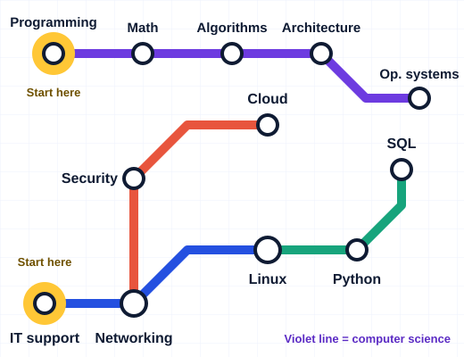

Information technology
Hands-on skills for support, networking, systems and cloud roles.
- IT support basics4 weeks
- Networking fundamentals6 weeks
- Linux and the command line5 weeks
- Cloud essentials6 weeks
Pick IT for networking, Linux and cloud, or computer science for programming, algorithms and theory. Each track tells you what to study, how long it takes, and what to build at the end.

IT is about running, connecting and securing systems. Computer science is about how computation works and how to build software. Many learners mix both, so every track is tagged with its subject.
Hands-on skills for support, networking, systems and cloud roles.
Theory and programming skills for software, research and further study.
Every track has a clear scope, a time estimate, a difficulty level and a subject tag, so you can fit it around work or school.
We link to the best free lessons, labs and documentation, grouped by track on the Resources page.
Each track ends with a mini project, such as subnetting an office network or implementing a hash table from scratch.
You want an IT job and need a study order that does not waste months on the wrong topics.
You already have classes. Use BytePath to fill gaps with hands-on practice.
You can code, but servers, networks and the theory behind your tools still feel like guesswork.
For IT, begin with networking and Linux. For computer science, begin with programming and discrete math.